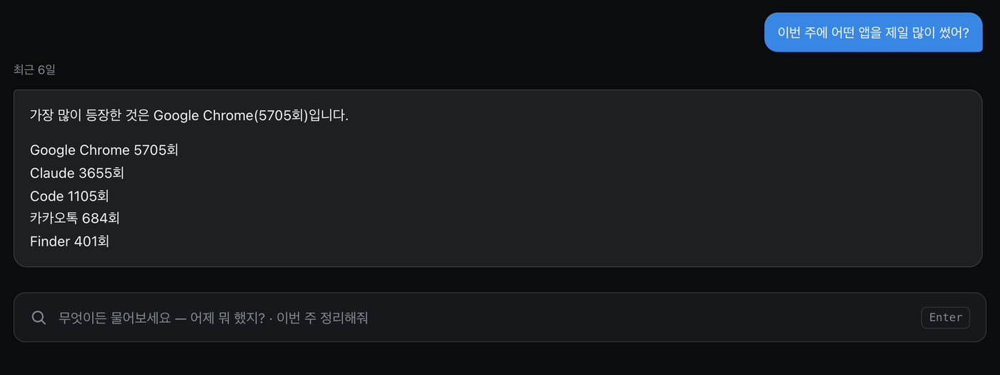
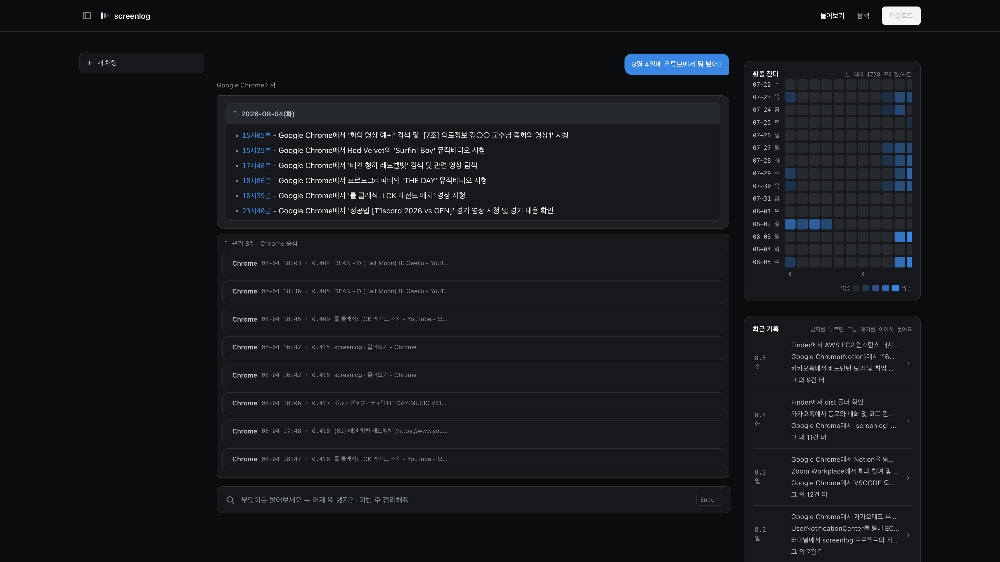
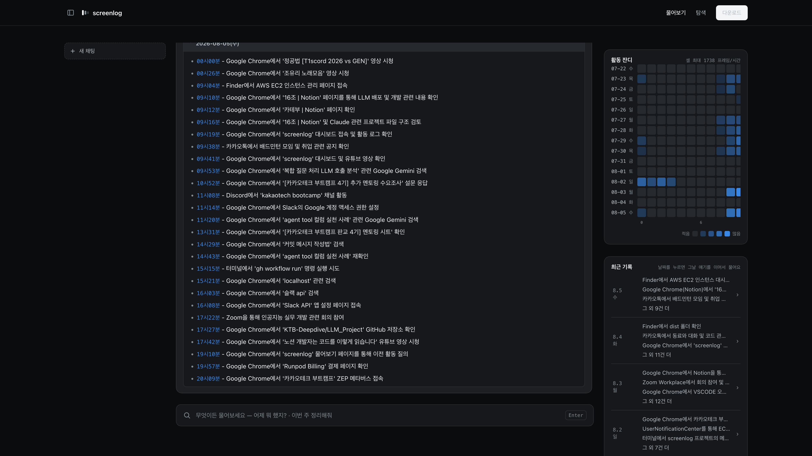
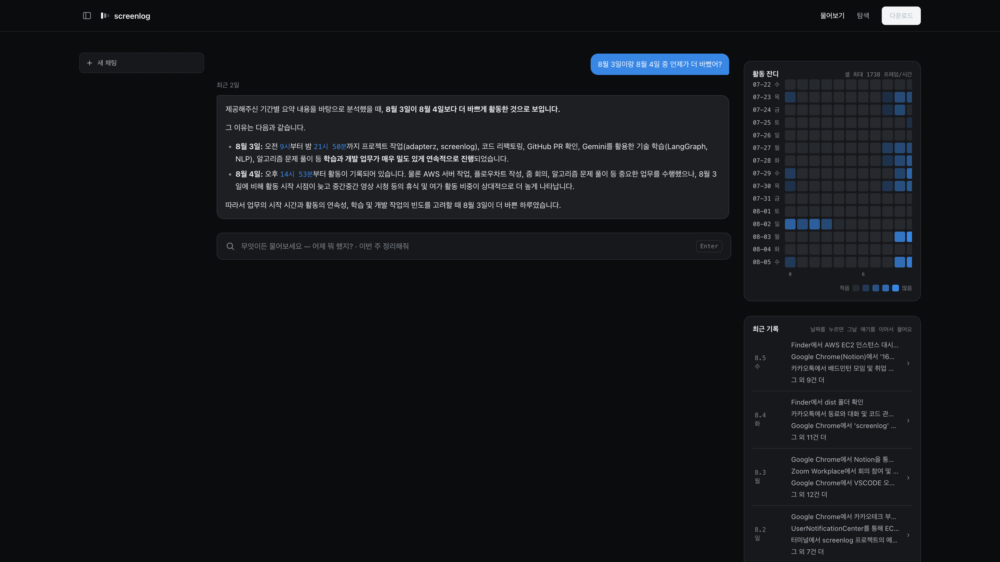
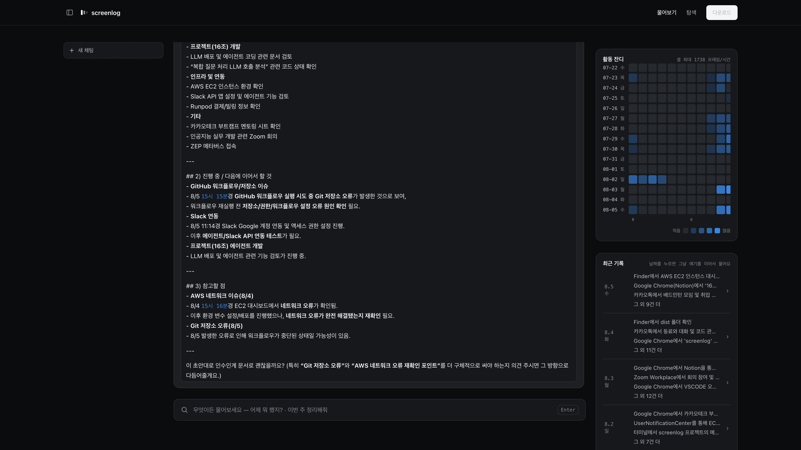
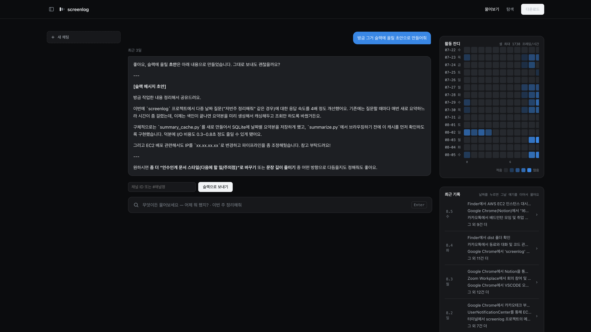

분명 바빴는데, 뭘 했는지가 기억이 안 났다.
내 화면 기록에 물어보면 근거와 함께 답하는 개인용 RAG
수집 · 정제 · 임베딩 · 검색 · 라우팅 · 요약 · 에이전트 · 서빙 · 배포 전부 한 저장소 안에 있고, 원본 데이터는 이 컴퓨터를 떠나지 않는다.
개인 프로젝트 · 1인 개발 · 커밋 68개 · 2026.07.28 — 08.06
실제 화면 · 편집도 가속도 없음

LLM을 한 번도 안 부른 답이다. count_range()가 chroma metadata를 직접 세서 문자열만 조합한다 — 요약문을 읽고 LLM이 세게 하면 실제 340회를 “5회”로 답하는 사고가 난다.
골든셋 25문항을 직접 라벨링했다. 라벨링 도구부터 자작했고, 그 도구를 만들다가 프로덕션 필터 로직이 빠진 것도 발견했다.
이 프로젝트의 절반은 코드가 아니라 기록이다.
백엔드 3,724줄 · 평가 스크립트 2,558줄 · 기술 문서 3,989줄 이벤트 30,521개 · 15일치 · 앱 27종
github.com/kkkk2058/screenlog

질문 아래에 라우팅 결과가 배지로 먼저 뜨고, 답 아래에 근거 8개가 붙는다 — 각 항목에 캡처 시각 · 앱 · 창 제목 · 거리 점수가 그대로 달린다. 화면에서 읽힌 원문 그대로라 OCR 노이즈까지 사용자가 직접 검증할 수 있다.

하루를 시각순으로 복원한다. 유튜브·Notion·카카오톡·Discord·터미널이 한 줄기로 이어져 나온다. 날짜별 요약을 병렬 생성해 먼저 끝난 것부터 스트리밍한다 — 첫 문장이 1.4초.

날짜별 요약을 각각 만든 뒤 그 요약들을 다시 LLM에 넣어 판단시킨다. 근거로 든 시간대와 활동을 짚으면서 결론을 낸다. 요약을 나열만 해서는 “어느 날이 더 바빴나”라는 날짜를 가로지르는 질문에 답이 안 나온다.

진행한 작업 / 이어서 할 것 / 참고할 점 세 갈래 양식으로 다시 쓴다. 에이전트가 draft_handover_doc을 골라 부른 결과다. “그때 뭘 하다 말았지”를 이어서 하려면 검색 결과가 아니라 문장이 필요했다.

“방금 그거”라고만 해도 직전 답변을 코드가 그대로 가져다 재포맷한다 — LLM이 필터를 다시 추론하다 무관한 내용을 만든 사고가 있어서다. 초안까지만. 실제 전송은 사용자가 이 버튼을 눌러야만 도는 별도 엔드포인트다.
랜딩 → 설치 안내 → 탐색 → 물어보기 → 답변 · 편집도 가속도 없음
기존 검색은 FTS5 키워드 매칭이라 “Commit 타입”이 찍혀 있어도 “커밋 컨벤션”으로는 안 잡힌다. 게다가 “어제 뭐 했지”, “이번 주 언제가 제일 바빴어”는 애초에 키워드로 표현할 수 있는 형태가 아니다.
그렇다고 메신저 대화와 로그인 화면이 담긴 기록을 통째로 남에게 맡길 수도 없었다.